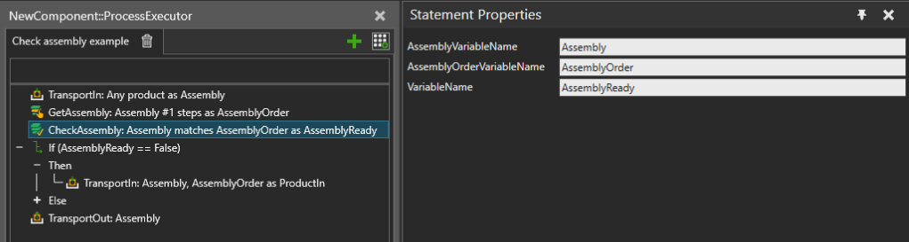

Checks if current state of an Assembly Instance matches a given Assembly Order and saves the result into a Process variable.
The result variable is set to True when all Pattern Slots selected in the Assembly Order are filled with products, and False otherwise.

| Name | Description |
AssemblyVariableName |
Name of the Process variable where to get the Assembly Instance. |
AssemblyOrderVariableName |
Name of the Process variable where to get the Assembly Order. |
VariableName |
Name of the process variable where to store the result as
Boolean value. |